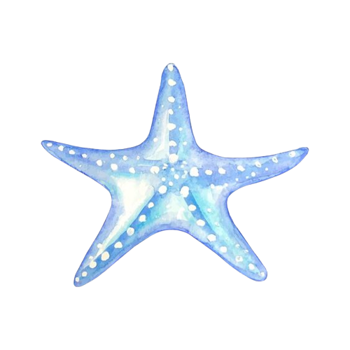

Aqualis To Promote the Importance of
Protected Areas



About the
Protected Areas
A Marine Protected Area (MPA) can be defined by a set of rules. Restrictive MPAs may prohibit any human activity in the area. Others may simply set limits on how many fish can be caught or what type of diving or boating can be practiced. The way MPAs are managed varies widely, depending on the unique characteristics of that area. Establishing a marine protected area can benefit both marine ecosystems and local communities. For example, protecting mangrove forests and coral reefs along the coast can provide healthy habitats for marine life and also strengthen the coastline against erosion. Scientists who studied the impact of a tsunami in the Indian Ocean in 2004 found that thriving mangrove fringes and other coastal ecosystems reduced the damage caused by the giant waves to coastal human communities. MPAs can also help local economies by promoting tourism and responsible fishing practices. MPAs also provide living laboratories for scientists to study marine ecosystems and other features of the sea.
Link to reference!!!